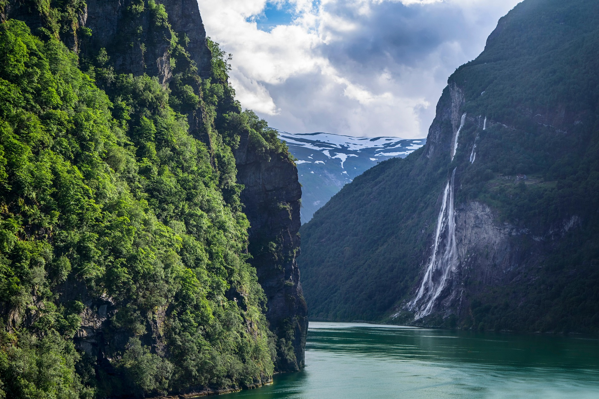
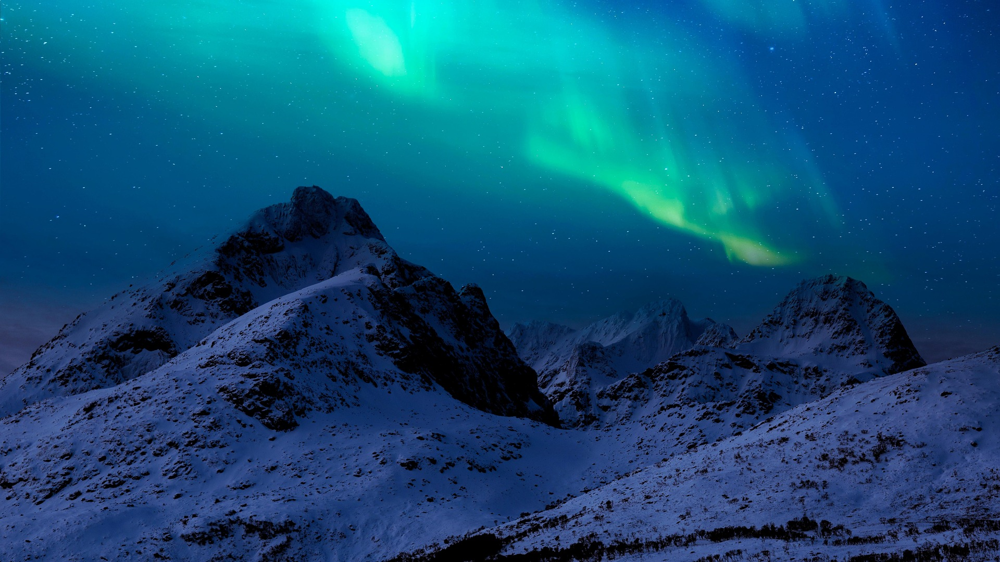

Pacotes De Viagens
Viagens organizadas por especialistas em viagens, com roteiros personalizados e experiências únicas.

Fiordes noruegueses De beleza sem igual, os fiordes noruegueses se destacam as altíssimas cachoeiras, os picos de montanha as águas cristalinas. A grande vantagem em visitar os fiordes noruegueses é a grande estrutura que a região oferece. O que fazer na região dos fiordes Passeios de ferry boat, cruzeiros e até caiaques são ótimas opções de contemplação da paisagem dos fiordes. Antigas e modernas rotas postais podem ser exploradas em trilhas que levam o viajante a pontos icônicos e muito fotografados como a rocha suspensa de Kjerag. Conhecida pela arquitetura Art Noveau, a cidade de Alesund possui uma beleza rara que une as obras feitas pelo homem e a natureza. A cidade também é cenário de festivais culturais como o Festival de Teatro de Alesund e o Festival da Nova Literatura Norueguesa.

A Noruega é um dos melhores lugares do mundo para observar a Aurora Boreal. Acima do Círculo Polar Ártico, muitas cidades oferecem excelentes oportunidades para testemunhar o fenômeno de meados de setembro até o início de abril de 2026. Ver a Aurora Boreal na Noruega exige planejamento e um pouco de sorte – como moradores locais, podemos ajudá-lo a vivenciar esse espetáculo e, ao mesmo tempo, desfrutar de férias memoráveis em nossa região. Ao longo da última década, a busca pela aurora boreal na Noruega tornou-se cada vez mais popular. Muitos dos destinos mais procurados ficam lotados durante a temporada da aurora, e os quartos de hotel e passeios costumam esgotar com bastante antecedência. O ingrediente mais importante para observar a Aurora Boreal em sua melhor forma é uma noite clara, com pouca ou nenhuma poluição luminosa. Cidades como Tromsø podem oferecer boas oportunidades de observação, mas na maioria das noites será necessário sair da cidade para escapar das luzes urbanas.